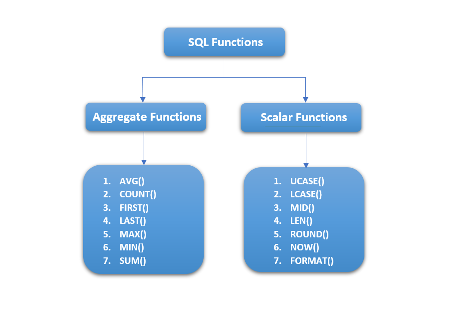

Functions are very powerful feature of sql used to manipulate data items. SQL functions are built into Oracle database and are available for use in various appropriate SQL staements.
Functions are similar to opeators in that they manipulate data items and RETURN a result.
Functions differ from operator in the format of their argument.This format enables them to operate on zero,one,two,or more arguments.
For doing operations on data SQL has many built-in functions, they are categorized in two categories:-
